How can anyone discuss extraterrestrials and fail to address the Drake Equation? Well, this section does exactly that. I address this section as an “insider” and as someone “in the know” on these matters. (I do not address it as an investigator searching for answers. There are others wearing that mantle throughout the Internet.)
The galaxy that we live in was fully colonized billions of years ago. It is now a rather well policed and thriving community of various races and species. Why we, as humans, do not seem to be part of this great community is due to the fact that our souls are transitional. We have not yet developed into an approved quantum archetype. Therefore, we must be segregated.
In other words, our physical form is unapproved.
However, that is changing. This chapter discusses the equation given our latest physical findings and I wrap it all in a nice bow given what I know from our extraterrestrial friends…
My Take on The Drake Equation
“We’re looking at all scenarios about finding life. If you find microbes, that’s one thing. If you find intelligence, it’s another. And if they communicate, it’s something else, and depending on what they say, it’s something else! The idea is not to wait until we make a discovery, but to try and prepare the public for what the implications might be when such a discovery is made. I think the reason that NASA is backing this is because of all the recent activity in the discovery of exoplanets and the advances in astrobiology in general. People just consider it much more likely now that we’re going to find something — probably microbes first and maybe intelligence later. The driving force behind this is from a scientific point of view that it seems much more likely now that we are going to find life at some point in the future.” –Steven J. Dick. Astronomer, symposium organizer and former chief NASA historian.
Here is my take on the “Drake Equation”.
(First some history.) Radio astronomer Frank Drake became the first person to start a systematic search for intelligent signals from extraterrestrial races far from the earth.
Using the 25-meter dish of the National Radio Astronomy Observatory in Green Bank, West Virginia, Drake listened in on two nearby Sun-like stars: Epsilon Eridani and Tau Ceti. His Project Ozma (named for L. Frank Baum’s story Ozma of Oz) slowly scanned frequencies close to the 21-cm wavelength for six hours a day from April to July 1960. The project was well designed, cheap, simple by today’s standards, and unsuccessful.
Following the Ozma experience, Drake organized a meeting with a select group of scientists to discuss the prospects and pitfalls of the search for extraterrestrial intelligence ( typically abbreviated SETI). In November 1961, ten radio technicians, astronomers, and biologists convened for two days at Green Bank.
Some Background First... The SETI program involves listening for radio broadcasts from nearby stars. Receipt of certain radio signals from a particular star may indicate intelligent life living on a planet orbiting that star. SETI is tuned to radio frequencies that are consistent with the frequency range we Earthlings use for broadcasting. The truth is: SETI was listening in the wrong frequency bands. [Point 1] If an extraterrestrial intelligence were to communicate by radio, would they use the same radio frequency bands that we use? Not in the least. That is highly unlikely. [Point 2] Moreover, they would broadcast their radio signals in “Compressed Space-Time”. This is because they can broadcast signals across interstellar space from one star to another in a matter of minutes. Otherwise, they would need to wait for years, decades or centuries. This is roughly equivalent to difference in sending a movie via email as a *.mov file as compared to a zipped *.zip file. You see, radio signals propagating through “Normal Space-Time” take several years to go from one star system to another. The compression factor of “Compressed Space-Time” distance is usually tens to hundreds of millions to that of “Normal Space-Time.” So, if an extraterrestrial intelligence broadcasts a radio signal at 100 MegaHertz in “Compressed Space-Time” where the distance compression ratio is 100 million to 1, then the observed radio broadcast in “Normal Space-Time” would appear to be 1 Hertz because its wavelength is 100 million times larger. Wavelength and frequency are inversely proportional. Therefore, if SETI expects to find any broadcasts from an intelligent extraterrestrial race, then SETI must listen in the very low frequency bands for radio ... on the order of 10-3 Hertz to 100 Hertz instead of the Kilohertz and Megahertz ranges for normal radio broadcasting. [Point 3] Reader, listen up, that is the ELF range. What a coincidence.All MAJestic members have ELF probes. These probes communicate using compressed space-time. [Point 4] Now, regarding the work of SETI, it is my knowledge that MAJestic operates within the U.S. Government in the form of a W(U)-SAP as a "carve out". It is fully aware of the existence of extraterrestrial races with advanced technology. There are indeed, members who know what is going on. They are involved with reverse engineering of extraterrestrial spacecraft, and is also fully aware of the broadcasts originating from extraterrestrial races. Therefore, they actually know the frequency bands where those broadcasts may be found. That organization has no desire to let the general public in on the truth. Thus... [Point 5] The SETI program gives the appearance of a concerted effort to search for extraterrestrial intelligence to the public. However, in fact, it is a farce and a waste of time and money. SETI is nothing more than a U.S. Government “Smoke Screen” designed to appease the masses.
It was in preparing for this meeting that Drake came up with his famous equation:
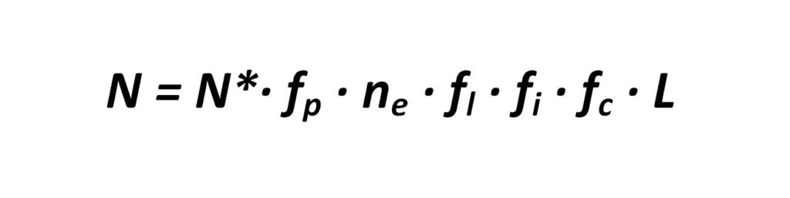
Today this string of letters and symbols can be found on T-shirts, coffee mugs, and bumper stickers. It is far simpler than it looks. It expresses the number (N) of “observable civilizations” that currently exist in our Milky Way galaxy as a simple multiplication of several, more approachable unknowns;
- N* is the rate at which stars have been born in the Milky Way per year,
- fp is the fraction of these stars that have solar systems of planets,
- ne is the average number of “Earth-like” planets (potentially suitable for life) in the typical solar system,
- fl is the fraction of those planets on which life actually forms,
- fi is the fraction of life-bearing planets where intelligence evolves,
- fc is the fraction of intelligent species that produce interstellar radio communications, and L is the average lifetime of a communicating civilization in years.
The Drake equation is as straightforward as it is fascinating. Astronomers and biologists alike have tried to “solve” the equation ever since.
Since I have some degree of entangled insight, I would like to take the moment to express what I believe the values of this particular equation is. Of course, I could be wrong. I could be right.
Therefore here are my opinions. All of what I place here is based upon what I know, not only as an [1] retired member of MAJestic, but also as a [2] space enthusiast. To do this, let's reevaluate the Drake equation by analyzing each term separately.
Let’s look at this formula relative to what we know about the universe today. There has been many, many, many, MANY changes since Doctor Drake first came up with this formula.
N* – Number of Stars in the Milky Way galaxy.
This is pretty simple and straight forward. This variable is the number of stars in our galaxy.
At the time that Doctor Drake first made his equation, this number was considered to be somewhat less than 400 million stars. Today, we know that the value is much, much larger than that.
The Milky Way galaxy has, at the very least, 750 million stars in it. Actually it is much larger than that, if you include the halo and the far cooler brown dwarf stars. However, for simplicity, let’s just maintain a conservative narrative in this exercise. The size of our galaxy is constantly being revised upwards. This includes the very dim red and brown dwarfs are typically difficult to see and detect.
N* = 750,000,000.
I suppose this is a debatable figure.
There are those whom argue that there are only 100 billion stars, while other argue that they are nearly a trillion stars. Conventionally, it is generally considered that the Milky Way galaxy has around 400 billion stars as determined by visible observation and inference.
However, that does not include the billions of non-visible stars; The vast bulk of red dwarfs that constitute over half of the stars in our galaxy. Nor does it include the super cool brown dwarfs. While there are many who might immediate discount these are possible birth places for native evolved life, I argue differently. I believe that they should and need to be included in the calculus. Therefore, that is why I believe that there are 750 billion stars in our galaxy.
Furthermore, everyone seems to exclude the galactic halo that surrounds our galaxy. (The subconscious reason is probably that if you did, galaxies would not have the magnificent shapes that we see and associate them with. They would all look like blobs, spheres or egg shapes.)
This halo easily adds another 400 billion stars to the mix, as well as the spaces between the visible arms. In fact, I could argue that our galaxy is the home for over 1.5 trillion stars, and I would be making an accurate statement at that.
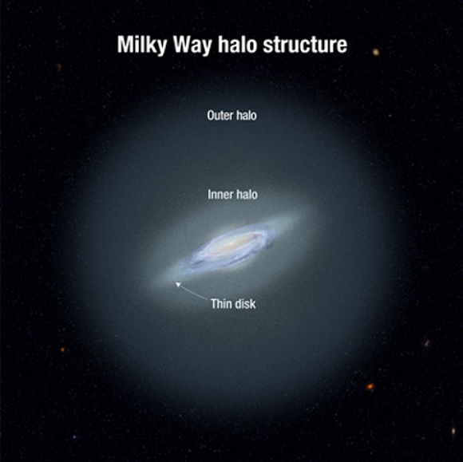
Our galaxy is far larger than what we can see from direct visual observation. In fact, it is much like our neighboring galaxy; the Andromeda.
Consider the Andromeda galaxy…
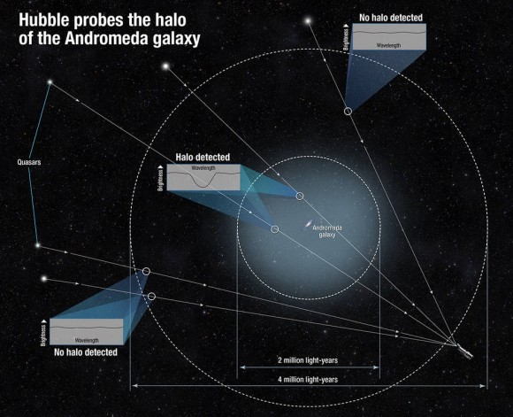
Further, as of 2015, Yan Xu, an astronomer at the National Astronomical Observatories of China, studied a mysterious group of stars that lay beyond the outermost edge of the Milky Way’s disk.
The so-called Monoceros Ring is about 60,000 light-years from the galactic center (just beyond where the disk was thought to end at 50,000 light-years). His study clearly found four total structures in and just outside what is currently considered the Milky Way’s outer disk.
The third structure was the highly debated Monoceros ring, and the fourth structure was the Triangulum Andromeda Stream, located 70,000 light-years from the galactic center.
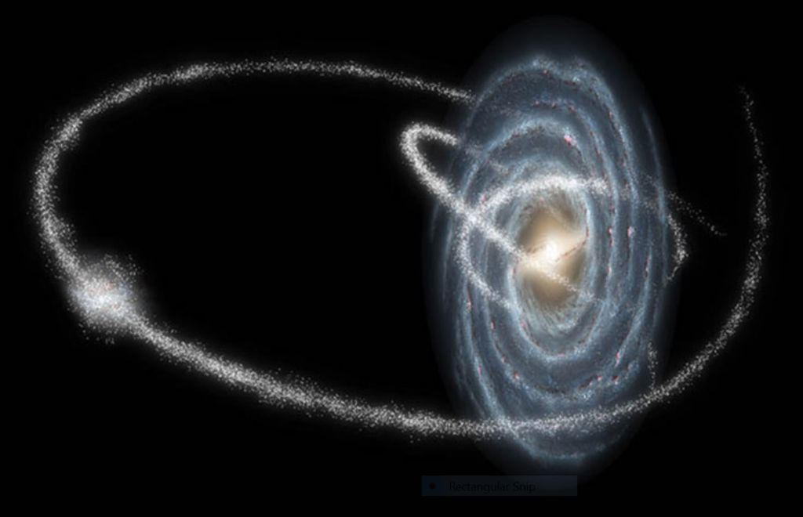
For a while there was quite a lively debate about these streams of stars. Some wanted to include them as part of the galaxy, while others wanted to consider them independent galaxies being “eaten” by the Milky Way. It’s all pretty silly.
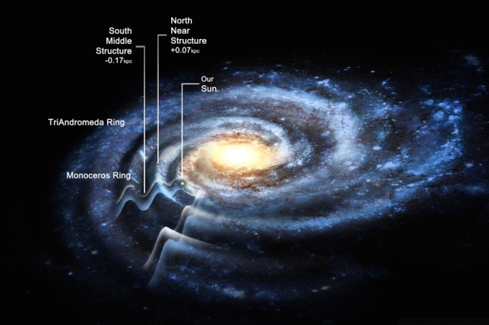
The shape of the galaxy is very interesting with ripples, streams, vortexes, and all kinds of matter being formed, displaced and moved about. It’s all pretty darn exciting and very, very interesting.
The four structures (so far) found and identified lie all about the galaxy.
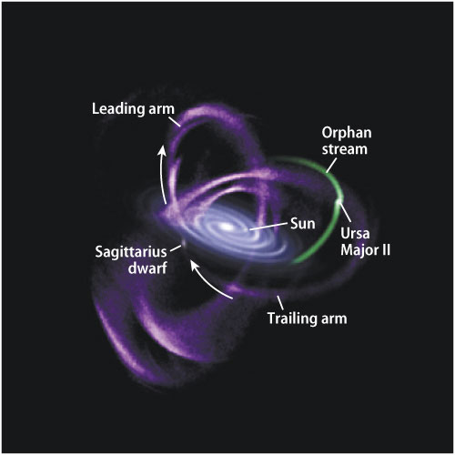
All four structures alternated with respect to the disk. They went from above it, to below it, to above it, to below it. The scientists were surprised that the ring and three other structures were actually a part of an oscillating disk.
"If it's true that the Monoceros Ring and the Triangulum Andromeda structure are part of this oscillatory pattern, then the stellar disk goes out way further than the textbook tells us it ought to be…" - Heidi Jo Newberg Rings and Radial Waves in the Disk of the Milky Way. arXiv:1503.00257v1 [astro-ph.GA].
All these new discoveries have resulted in new ideas and considerations regarding the size of the Milky Way galaxy. It is now much, much larger than what was first assumed. Now, instead of extending nearly 100,000 light-years from one side to the other, it would be more like 160,000 light-years wide.
That is a 60% increase in size.
This corrects the Milky Way’s size up to that of Andromeda, and clearly approaches and even surpasses the 750 billion star estimation. (Which accurately explains the mass discrepancy between the two galaxies that have been a mystery for years.)
| Considerations | Milky Way Galaxy Size |
| Visible stars only | 400 Billion |
| Visible stars plus dim red dwarfs | 750 Billion |
| Above, plus brown dwarfs and the halo stars | 1150 Billion |
| Above, plus the four ring structures. (Most accurate.) | 1500 Billion |
However, for purposes of conventionality, let’s just restrict our evaluation to the visible galaxy, and leave the value at 750 billion stars. Note: our calculations are limited to our galaxy alone. The universe is far larger and more comprehensive than what we can possibly consider at this time
fp – Fraction of Stars with Solar Systems
“Yesterday, the US space agency announced there are 2,325 confirmed planets in just a tiny fraction of the galaxy studied by the Kepler Telescope mission. Exoplanets are those which orbit a star in the so-called Goldilocks or habitable zone, where the distance from the sun means it is not too hot nor too cold to stop life forming. Now NASA has estimated there are tens of billions of these in the Milky Way and many of them could be small and rocky like Earth.” -SEARCH FOR LIFE SENSATION: 10 BILLION Earths potentially in The Milky Way ALONE
The second variable in the Drake Equation is fp. This is the fraction of stars that have planetary systems.
At the time when Doctor Drake made up his equation, this was a big unknown. At that time, there were many scientists that believed that our solar system was unique, and that most stars did not have ANY planets in orbit around it. Of course they were wrong. Today, we know differently.
Recent discoveries have confirmed that many or most young stars are surrounded by planet-forming disks. Further, the detection of scores of actual planets orbiting nearby Sun-like stars since 1995, confirm what astronomers had already suspected: planets are very, very common.
Not just some-what common; they are extremely very common.
So-called “proto-planetary disks” are routinely detected by infrared observations. They are often seen directly in, for instance, Hubble Space Telescope photographs of the Orion Nebula. This is a typical nebula, and one of the most prolific star-forming regions in our part of the Milky Way.
Submillimeter-wave observations have shown much more tenuous dust disks around many older stars. This includes Drake’s first target, Epsilon Eridani.
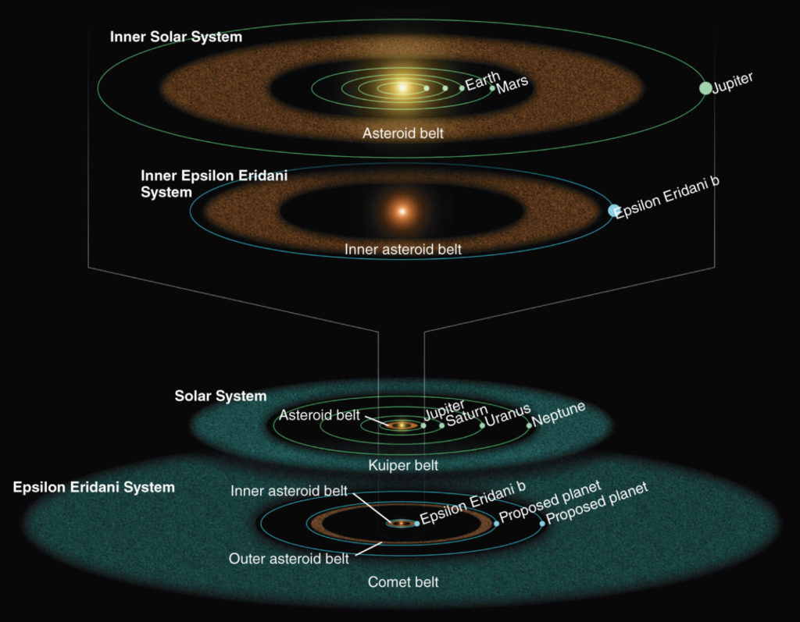
Many of these disks are doughnut shaped. According to many theorists, the central holes can only be swept clear by planets accreting gas and dust from the disk’s inner portion. In addition, some of the disks (including Epsilon Eridani’s) show distortions that may directly indicate a planet circling in their outer regions.
Planets are everywhere. They are common place.
As for actual planet detection, extrasolar-planet searches have found (as of June 2003) that about 12 percent of Sun-like stars have a giant planet orbiting it (within 5 astronomical units of the star – Jupiter’s distance from the Sun).
At face value, this might imply that about 12 percent of stars have planets, so fp would be 0.12. (That are easy to detect; our detection methods are still preliminary.) However, this is only part of the story; the current search techniques are sensitive only to massive planets, especially those in small, fast orbits.
Solar systems like ours cannot yet be recognized (though they should be in reach within a few years). Very likely the fraction of single Sun-like stars with planets of some kind is much higher than 12 percent. Reasonable guesses held by those in scholarly circles might be 20 to nearly 100 percent.
"The Kepler specialist telescope is the first capable of detecting call rocky planets in the habitable zone of their parent star. When launched we did not know if exoplanets or rocky exoplanets were rare and we now know they are extremely common and most stars have at least one planet orbiting. Our research is on just a fraction of possible exoplanets and knowing this is the first step in answering the question if we are alone in the universe." -Paul Hertz, Astrophysics Division director at NASA Headquarters in Washington
But the truth is that all stars older than 1/2 billion years old have planets.
fp = 80% = 0.80.
The solar systems surrounding these other stars tend to be rather large and maintain a host of rocky planets of various sizes. For our purposes, lets simplify things as simply state that 80% of the stars in the galaxy are over ½ billion years old, and that of these, they all maintain a solar system of some type. Thus, for our purposes fp = 80% = 0.80.
Again, like before, this is a very conservative number. We need to understand that Solar Systems are Common.
Researchers at The Australian National University (ANU) have found that far-away planet systems are shaped like the solar system, with multiple planets aligning with the host star on a flat plain. Co-researcher Associate Professor Charley Lineweaver said NASA’s discovery of the seven-planet system being on a flat plain supported this research, which challenges the usual assumption that planet systems are flared like bell-bottoms. (The lead author of the research paper, published in The Monthly Notices of the Royal Astronomical Society, is RSAA PhD student Tim Bovaird: arxiv.org/abs/1702.08126.)
"Other planet systems in the universe seem to be much like our solar system," -Dr Lineweaver from the ANU Research School of Astronomy and Astrophysics (RSAA).
Who also said…
"The more we find out about these planet systems the more it seems the solar system is unexceptional." -Dr Lineweaver from the ANU Research School of Astronomy and Astrophysics (RSAA).
The Kepler space telescope has detected more than 4,000 planets orbiting 3,200 stars. The majority of these host stars have only one detected planet, while 656 have multiple planets.
"The wealth of the Kepler planet data allows for the first time detailed studies of planet systems outside the solar system. We are now able to ask and answer questions like, how common are planet systems like our own?" -Mr Tim Bovaird
Simulations of these planet systems had previously only matched the observed data by assuming a Kepler Dichotomy, an assumption that there are two types of star: one type with only one planet, and another type with multiple planets.
"Simulations with flared planet systems were slightly easier to perform and that is what researchers had assumed," -Mr Tim Bovaird
"But this is an odd assumption because the inner part of our solar system is flat, not flared. When we dropped the assumption that planet systems are flared, simulations naturally matched the observed data without using the Kepler Dichotomy." -Dr Lineweaver from the ANU Research School of Astronomy and Astrophysics (RSAA).
Dr Lineweaver said the team’s result should demote the Kepler Dichotomy and allow more realistic interpretations of new planet systems.
Ne – Fraction of planets with conditions suitable for life.
“It’s been nearly 20 years since the discovery of the first extrasolar planet around a normal star. Since then, we have learned that most stars have planets of some size orbiting them, and that Earth-size planets are relatively common in close-in orbits that are too hot for life. With this result, we’ve come home, in a sense, by showing that planets like our Earth are relatively common throughout the Milky Way Galaxy.” -Andrew Howard, a former UC Berkeley post-doctoral fellow who is now on the faculty of the Institute for Astronomy at the University of Hawaii.
The next factor is ne. This factor represents the average number of worlds in a typical solar system that have environments suitable for the origin of life (the “e” stands for “Earth-like”).
In his 1992 book “Is Anyone Out There?”, Doctor Drake recalls that the participants in the Green Bank meeting concluded that the minimum value of ne lay between one and five.
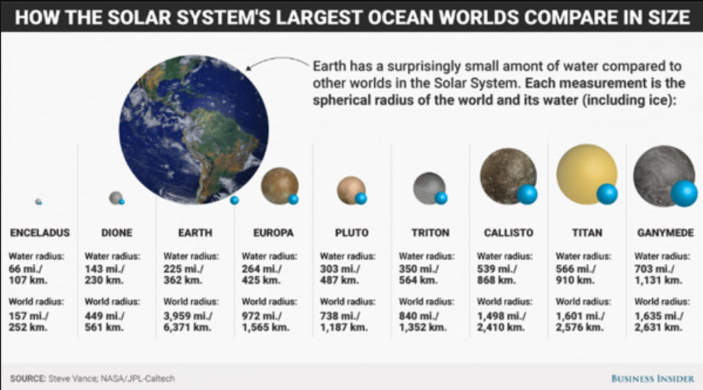
In other words, every planetary system was expected to contain at least one minimally Earth-like place (defined as where liquid water is possible), and that there might easily be three, four or five hospitable worlds per system.
The Kepler spacecraft's finds suggest, among other things, that every Milky Way star hosts at least one planet on average; that rocky planets are extremely common throughout the galaxy; and that about 20 percent of all stars in the Milky Way host a roughly Earth-size planet in their habitable zones.
This optimistic view was based on the assumption that our own solar system is typical.
Today Mars and Jupiter’s moon Europa, and Enceladus, as well as one or two other moons are being considered as possible sites of early aquatic biology, making six possible “Earths” (by the Drake-equation definition) in our solar system.
We know that solar systems, and their orbits might be very complicated. We also know that there is a great deal of variation between different solar systems. But none of that need concern us here.
Life forms easily in our universe. The conditions to replicate the most simple organisms is relatively common throughout the universe. Given what we know, this value should be considered to be around 6 depending on the age and local situations of the solar system.
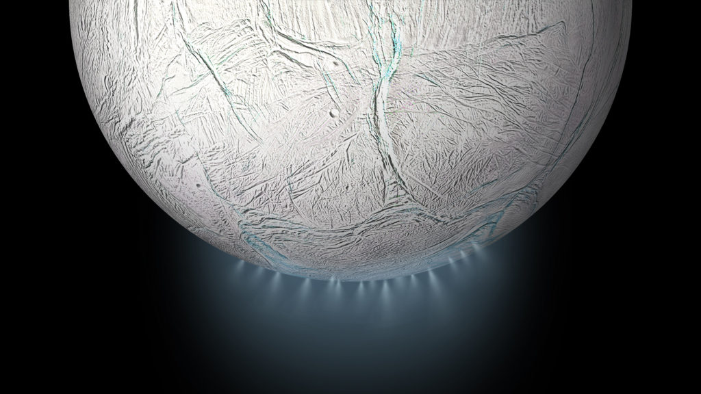
Drake proposed the value to be 5 decades ago. Contemporaneous knowledge places this value at 9. We could be ultra conservative and simply knock this value down to two. That way we can pretend objectivity in the face of reality. ne= 2. But I won’t. There are nine planets in our solar system with oceans of water, and we know that our solar system is typical. ne= 9.
ne= 9
In fact, we see evidence for this on our own planet. At the time of the first debates concerning the Drake Equation, many scientists argued that life was a rarity in our universe. But now, though advances in science and discoveries too numerous to mention here, we know now just how abundantly easy it is for life to form. Just consider our own planet; Earth.
On our planet, creatures have been proved to be able to live in the most extreme of environments.
- Consider this creature; a loriciferanidentified as a still undescribed species of the genus Spinoloricus. The creature has specialized organelles so that it can survive without oxygen.
- Endolithsare organisms that live inside rocks or other spots thought impermeable to life, such as in crevices of animal shells or the pores between grains of minerals. These species have been found over 2 miles (3 km) below the Earth’s surface, and may live even deeper. Water is scarce at these depths, but some studies suggest they feed on surrounding iron, potassium, or sulfur. While their choice of abode presents some limitations, it also provides protection from harsh winds and radiation from the sun.
- Other extreme species prove their mettle by withstanding intense amounts of radiation. For example, the Deinococcus radiodurans bacterium can survive a 15,000 gray dose of radiation, where 10 grays would kill a human and it takes over 1,000 grays to kill a cockroach. This species, in fact, is exemplary in many ways, encompassing also the ability to survive cold, dehydration, vacuum and acid. The Guinness Book of World Records lists D. radiodurans as the world’s toughest bacterium.
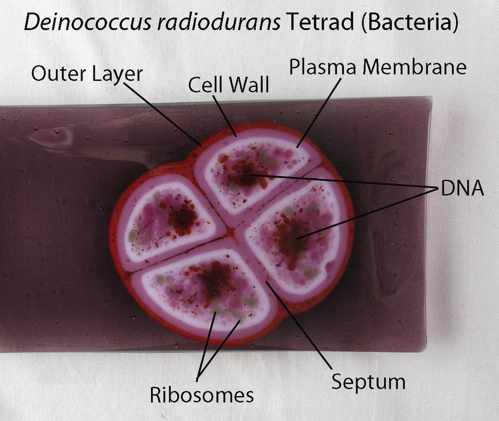
- Some microbes, called psychrophiles, found in polar ice, glaciers and deep ocean waters can withstand frigid temperatures as low as 5 degrees Fahrenheit (minus 15 degrees Celsius). They consist mostly of bacteria, fungi and algae, and contain enzymes that are adapted to function at low temperatures. They have been found, for example, in the frozen Arctic and Antarctic Oceans and beneath sheets of ice in Siberia.
- Salt-tolerant “halophilic” microorganisms can withstand salt concentrations that would wither most life. One example is the bacteria Halobacterium halobium, which has evolved to live in environments with 10 times more salt than seawater, such as the salty lakebed of California’s Owens Lake.
- One extreme species, the Thermococcus microbe, can survive on so little energy that until now the chemical reaction it uses wasn’t thought able to sustain life. These organisms were found living near deep-sea hydrothermal vents where super-hot water seeps out of the Earth’s crust near Papua New Guinea. In addition to their thrifty use of energy, the microbes can survive in extreme temperatures too scorching for most creatures.
- So-called hyperthermophilesare species that thrive in extremely hot environments. The Aquifexgenus of bacteria, for example, has been found living in hot springs in Yellowstone National Park, where temperatures can reach 205 degrees Fahrenheit (96 degrees Celsius).
- Some organisms, such as Dunaliella algaediscovered in 2010 in a cave in Chile’s Atacama desert, can thrive on very little water. Despite living in the driest place on Earth, these mooching microbes grow on top of spiderwebs to capitalize on dew – the meager amounts of air moisture that condense on the webs in the mornings.
There should be no question, at all, that life can and will evolve around planets with the harshest of conditions.
Consider that…
Underground liquid oceans abound in the coldest of planets
Oceans trapped beneath the icy surface of distant worlds at the edge of our solar system may be able to sustain liquid water. Evidence seems to support that this can be the case for far longer than previously suspected.
Distant objects known to exist beyond Neptune’s orbit are known to be too cold to host liquid water at the surface. Here there are temperatures dropping more than 350 degrees below zero Fahrenheit (below minus 200 Celsius). But, there is evidence to suggest an interior liquid water layer exists beneath the crust.
According to NASA research, heat created by the gravitational pull of moons formed in large collisions could be enough to extend the lifetimes of these subsurface oceans.
As well as the idea that…
There might be life under the surface on Pluto
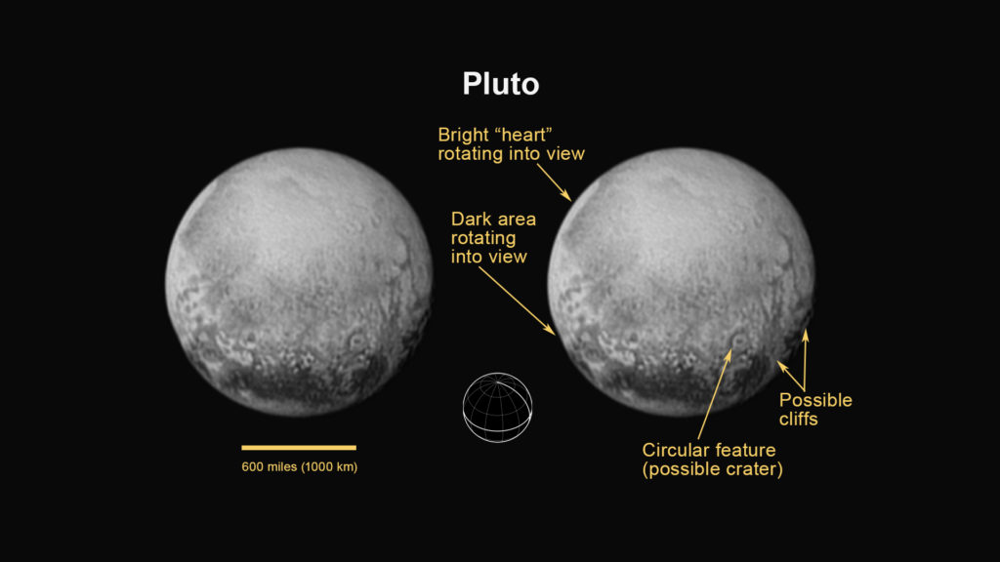
Alien life may be lurking beneath Pluto’s crust, according to physicist Brian Cox. His comments, made in 2016, come after the flyby of the dwarf planet by the New Horizons probe. Photographs have uncovered huge glaciers and mountains made completely of water ice. These features hint at the possibility of subterranean seas on the dwarf planet warm enough for organic chemistry to thrive. The probe ‘showed that there may well be a subsurface ocean on Pluto.
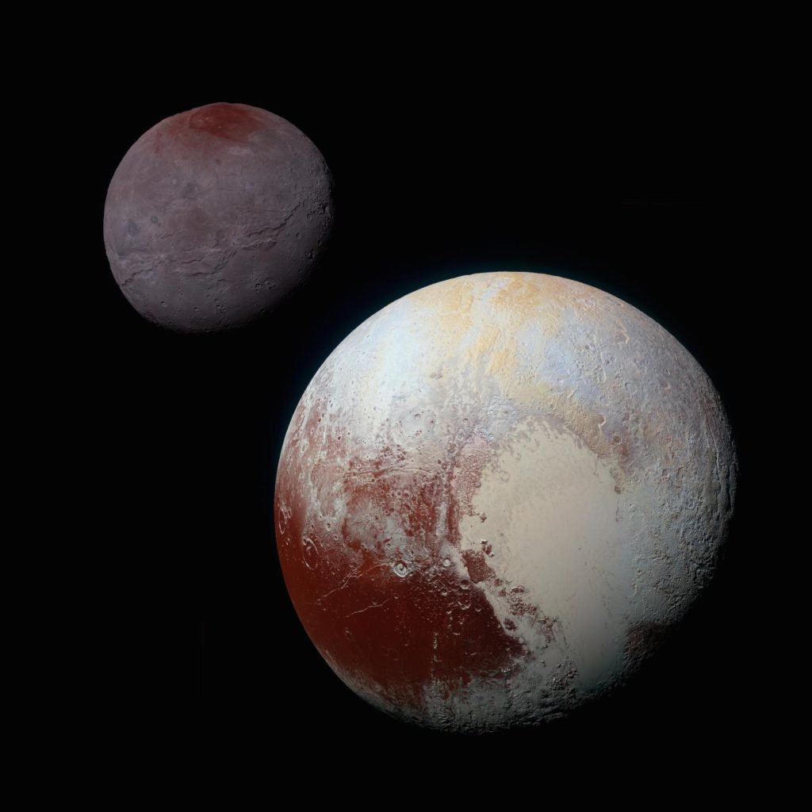
What this means is, if our understanding of life on Earth is even slightly correct, that you could have living things there as well. And, not just there, but…
There could be life in TNO’s
The findings mean the objects, known as Trans-Neptunian Objects (TNOs) could be considered as possible locations to find extraterrestrial life.
“These objects need to be considered as potential reservoirs of water and life” -Prabal Saxena of NASA’s Goddard Space Flight Center in Greenbelt, Maryland.
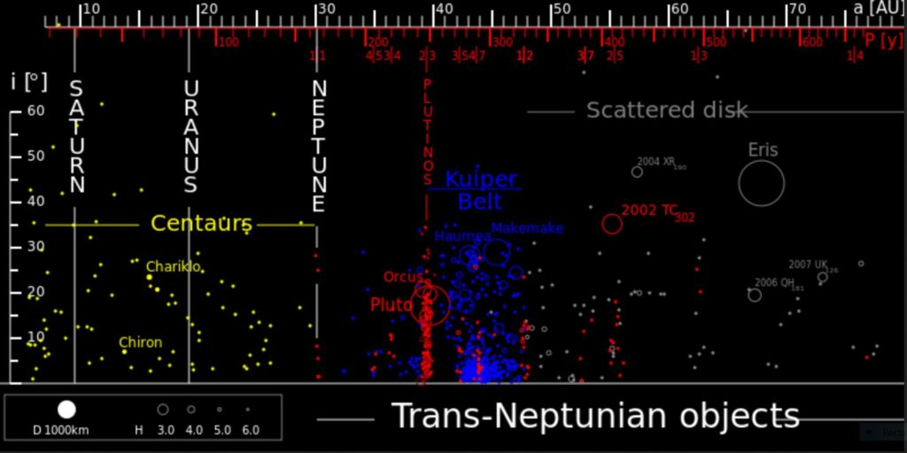
According to NASA, there are likely dozens of these worlds. Pluto and its moons, for example, are Trans-Neptunian Objects. Light reflected from TNOS has revealed signatures of crystalline water ice and ammonia hydrates. These may have erupted to the surface through cryovolcanism, bring the compounds up from the liquid water interior.
In TNOs, decaying radioactive elements can generate heat to melt a layer of the icy surface, and create a liquid ocean below. While this could exist for billions of years, these elements eventually become more stable, and stop releasing heat. This means the interior gradually cools, and in turn, the subsurface ocean will freeze.
But according to NASA, gravitational interactions could allow the oceans to maintain their liquidity.
When large celestial objects collide, moons can be born if material is thrust into orbit around the larger object and forms under its own gravity. Eventually, these collision-generated moons adjust to a more stable orbit, NASA explains, and the gravitational pull between the moon and the planet world causes the interiors to stretch and relax. This generates friction, and releases heat.
“We found that tidal heating can be a tipping point that may have preserved oceans of liquid water beneath the surface of large TNOs like Pluto and Eris to the present day,” -Wade Henning of NASA Goddard and the University of Maryland, College Park.
Light reflected from TNOS has revealed signatures of crystalline water ice and ammonia hydrates. These may have erupted to the surface through cryovolcanism, bring the compounds up from the liquid water interior. Two potential cryovolcanos on Pluto have shown this to be the case.
“Crucially, our study also suggests that tidal heating could make deeply buried oceans more accessible to future observations by moving them closer to the surface… If you have a liquid water layer, the additional heat from tidal heating would cause the next adjacent layer of ice to melt.” -Joe Renaud of George Mason University, Fairfax, Virginia.
Now, you know, liquid water alone is not enough to sustain life.
But, the researchers say the tidal heating could also give rise to hydrothermal vents, which could supply the ingredients for life. The team plans to further investigate the processes to determine how long a the lifetime of a liquid ocean could be extended, and at what point the ocean itself forms, along with how energy dissipates in the heating process.
By the way; an interesting theory regarding how easy it is for life to traverse the stars and fertilize distant worlds is known as “panspermia”. While I do not know if this theory is valid or not, I do personally believe that it is possible that panspermia-similar methodologies have contributed to the growth of native life on various planets in the universe. The word panspermia literally means, "seeds everywhere." Its earliest recorded advocate was the Greek philosopher Anaxagoras, who influenced Socrates. The theory regards the premise that organic “seeds” might transport in the vast gulfs of space and fertilize distant planets. Thus, appearing to the local inhabitants, as “spontaneous generation”. For a long time, people believed that life could appear from nothing. But this was disproven. On April 9, 1864, French chemist Louis Pasteur reported his experiment disproving spontaneous generation as it was then held to occur. In the 1870s, British physicist Lord Kelvin and German physicist Hermann von Helmholtz reinforced Pasteur and argued that life could come from space. The modern take on what actually was happening with “spontaneous generation” occurred in the first decade of the twentieth century, Swedish chemist and Nobel laureate Svante Arrhenius theorized that bacterial spores, propelled through space by light pressure, were the seeds of life on Earth. Supporting this theory, in 1953, American chemists Stanley Miller and Harold Urey showed that some amino acids can be chemically produced from amonia and methane. The Miller-Urey experiment is now famous, and the paradigm of Oparin and Haldane still prevails today.
Starting in the 1970s, British astronomers Fred Hoyle and Chandra Wickramasinghe rekindled interest in panspermia. By careful spectroscopic observation and analysis of light from distant stars they found new evidence, traces of life, in the intervening dust. They also proposed that comets, which are largely made of water-ice, carry bacterial life across galaxies and protect it from radiation damage along the way. One aspect of this research program, that interstellar dust and comets contain organic compounds, has been pursued by others as well. It is now widely accepted that space contains the "ingredients" of life. This development could be the first hint of a huge paradigm shift. But mainstream science has not accepted the hard core of modern panspermia, that whole cells seeded life on Earth. Functionally, the mechanisms for panspermia include the deflection of interstellar dust by solar radiation pressure and extremophile microorganisms traveling through space within an asteroid, meteorite or comet. Three popular variations of the panspermia hypothesis are: [1] Lithopanspermia(interstellar panspermia) - impact-expelled rocks from a planet's surface serve as transfer vehicles for spreading biological material from one solar system to another. [2] Ballistic panspermia(interplanetary panspermia) - impact-expelled rocks from a planet's surface serve as transfer vehicles for spreading biological material from one planet to another within the same solar system [3] Directed panspermia- the intentional spreading of the seeds of life to other planets by an advanced extraterrestrial civilization, or the intentional spreading of the seeds of life from Earth to other planets by humans. Panspermia does not provide an explanation for evolution or attempt pinpoint the origin of life in the Universe, but it does attempt to solve the mysteries of the origin of life on Earth and the transfer of life throughout the Universe.
Fl – Fraction of habitable planets
“I believe [alien life exists], but I have no evidence. I would be really excited and it would make my understanding of my religion deeper and richer in ways that I can’t even predict yet, which is why it would be so exciting.” -Brother Guy Consolmagno, who is the president of the Vatican Observatory Foundation. He is urging the public not to be surprised when extraterrestrial life is discovered, because it is inevitably going to happen. He even said that he would be happy to baptize them, if it’s intelligent extraterrestrial life that’s discovered. The Vatican has been very open to the idea of intelligent extraterrestrial life, and they’ve expressed these views for a very long time. Indeed, Earth is not the center of the universe, it’s not flat, and it’s looking very likely that the next major, paradigm-shifting revelation for mankind will be the public acceptance that we are not alone in the universe.
In scientific circles there’s much less concern now than in the past about the value of fl, the fraction of habitable planets on which life evolves.
The molecular building blocks of life, complex organic compounds and even amino acids, are abundant in the universe. They have been discovered in meteorites, comets, and interstellar gas and dust. There are vastly more amounts of amino acids, for instance, in interstellar space than in the Earth’s biosphere.
Although hydrocarbons and amino acids are not living organisms, there’s little doubt that a lot of prebiotic evolution is going on in the dark clouds between the stars.
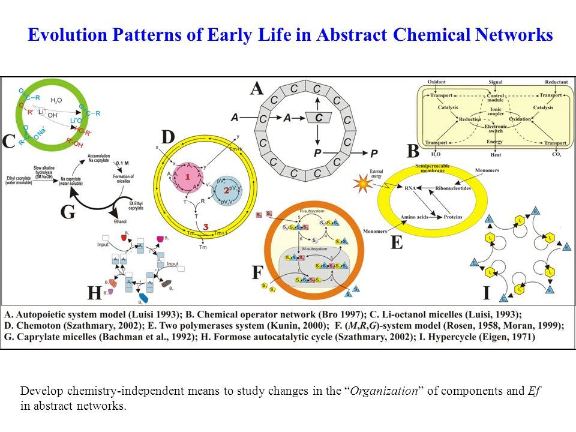
Most significant are the recent discoveries that microorganisms appeared on Earth only moments (geologically speaking) after the last devastating, ocean-vaporizing impacts of the planet’s youth some 3.9 billion years ago.
There is clear evidence that bacteria were already around by 3.5 billion years ago. There is even more disputed evidence from 3.7 and 3.85 billion years ago.
Apparently, given the right conditions, the origin of life is a rather straightforward process that happens easily. Well, at least when given a planet-sized crucible and millions of years for the process to run.
It would seem that if the process were rare or difficult, one would not expect it to have happened at the first possible opportunity on our home planet. Instead, it would be expected to take much longer.
Today, it is interesting to note that biologists now discuss whether life may have arisen several times separately. There’s every reason to think that all living things today have a common ancestry, but other, independent lines could have formed and been wiped out early.
Curiously, a team led by Francois Fressin of the Harvard-Smithsonian Center for Astrophysics used the latest data from NASA’s Kepler mission the find that one in every six stars have “planets 0.8 to 1.25 times the size of Earth in an orbit of 85 days or less.” According to their calculations there are at least 17 billion Earth-sized planets in our galaxy. That is a lot of Earth analogs.
How many potentially habitable planets? Well, the data confirms the latest information from the Monthly Notices of the Royal Astronomical Society. From the information that we have now, If life does form wherever it can, then presumably fl= 2.
fl= 2.
From their report by using the inclinations of Kepler systems to prioritize new Titius–Bode-based exoplanet predictions…
“…We analyse a sample of multiple-exoplanet systems which contain at least three transiting planets detected by the Kepler mission (‘Kepler multiples’). We use a generalized Titius–Bode relation to predict the periods of 228 additional planets in 151 of these Kepler multiples. These Titius–Bode-based predictions suggest that there are, on average, 2 ± 1 planets in the habitable zone of each star. We estimate the inclination of the invariable plane for each system and prioritize our planet predictions by their geometric probability to transit. We highlight a short list of 77 predicted planets in 40 systems with a high geometric probability to transit, resulting in an expected detection rate of ∼15 per cent, ∼3 times higher than the detection rate of our previous Titius–Bode-based predictions.”
The above chart clearly shows a generalized Titus-Bode relation to analyze 68 multi-planet systems with four or more detected exoplanets.
It shows predictions for the existence of more planets in these systems, based on the Titus-Bode relation. It clearly shows that the majority of these exoplanetary systems adhered to the Titus-Bode relation even somewhat better than our very own solar system did. Thus, we can be convinced that the “semi-taboo” and (believed to be) obsolete Titus-Bode relation could provide useful hints about the periods of as-yet-undetected planets around other stars.
So far, 5% of our predictions have been confirmed. This may sound like a small percentage, but given the inability of the Kepler telescope to see Earth-sized planets or smaller, a 5% detection rate is what you would expect to see if all the predictions were true.
"There is 50 per cent we can't see. We now know these (earth-like) planets are common throughout the galaxy, so surely more will be discovered." -John Jenkins, Kepler data analysis lead at NASA's Ames Research Center in Moffett Field, California
The JianPo Guo Opinion
This question was addressed by JianPoGuo (National Astronomical Observatories, Kunming, China) and colleagues via simulations.
In their paper (“Probability Distribution of Terrestrial Planets in Habitable Zones around Host Stars,” Astrophysics & Space Science Vol. 323, No. 4 (October, 2009).) they addressed the possibility of habitable worlds for terrestrial-like life.
By ‘terrestrial’ world, the researchers chose refer to planets between one and ten Earth masses, although they note that some scientists would take this figure lower. Maybe even to perhaps 0.3 Earth masses. The argument is that this may be enough to retain an atmosphere over long geological timescales and to sustain tectonic activity.
Guo’s team is interested in the distribution of terrestrial planets in our galaxy.
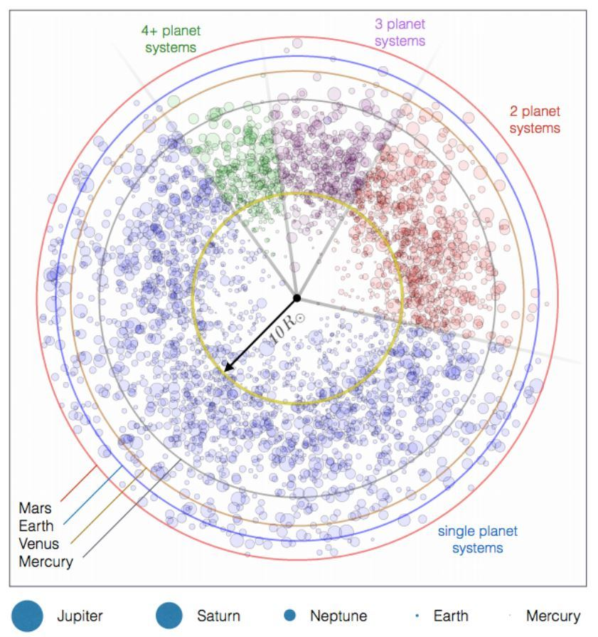
Their simulations (that grew out of this study) created a probability distribution of such planets in habitable zones. The paper is laced with the specifics, and are quite interesting. In general, Guo’s figures show 45.5 billion terrestrial planets lie in the habitable zones of host stars in our galaxy.
The team also worked out the probability for planets in the habitable zones of different types of stars.
- M-class dwarfs host 11.5 billion such terrestrial worlds.
- K-class stars have 12.9 billion earth-like worlds.
- G-class stars like our Sun weigh have around 7.6 billion similar worlds.
- F-class stars show 5.5 billion such worlds.
Larger and smaller stars were not considered. No brown dwarfs were considered (Bad move, in my opinion.). His conclusions: there are many habitable worlds in our galaxy.
The David Kipling Opinion
It’s interesting to weigh these numbers against the estimates of exo-moon hunter David Kipping (University College, London). Kipping starts with the galactic distribution of stellar types.
He’s assuming about 300 billion stars in the Milky Way (increasingly cited as the best estimate, but wholly at odds with my personal appraisal which is more than triple that figure.) and noting that 90 percent of these are main sequence and thus stable for long periods of time.
He goes on to whittle the number down, (randomly and Indiscriminately) eliminating M-dwarfs because of tidal lock and also cutting out short-lived stars higher than F-class. 22.7 percent of main sequence stars in classes F, G and K thus remain.
Citing Michel Mayor’s Geneva team, which found that roughly 30 percent (give or take 10%) of F, G and K-class stars have super-Earth or Neptune-mass planets, Kipping then narrows the select field yet again:
Using 30% as a fixed value and assuming that very roughly half of this sample correspond to rocky planets and half to Neptune-like gas giants then we may write down that 15% of all F, G and K-type stars have rocky planets around them. (It should be noted that this value is very likely an underestimate due to fact planets of Earth mass are currently below the detection threshold.)
But how many of these planets would exist in the habitable zone?
Kipping was working with 330 exoplanets then discovered, with about thirty in the habitable zone of their host star, and so he suggested a fraction of 10 percent would be a safe estimate based on current knowledge. He then factors in a galactic habitable zone, assuming that one may exist and that any value he obtains will therefore be an underestimate if it does not. This takes the number of stars with habitable planets down to 5 percent, but still leaves him with 50 million habitable-zone exoplanets in the Milky Way. We can contrast that with Alan Boss’s prediction of ten billion habitable exoplanets in our galaxy and, of course, with Guo’s team, whose whopping 45.5 billion is the largest estimate I’ve ever seen.
The weird thing is that his 50 million estimate was actually rounded up from 45.5 million, a figure exactly 1000 times less than Guo and team’s number. Our numbers, then, seem to be all over the map, and Kipping also notes Bond and Martin’s 1978 estimate of 10 million habitable exoplanets. But Kipping is the only one who considers the intriguing possibility of habitable moons. (He is, after all, a specialist in detection methods for moons around exoplanets, studying methods that may help us detect large satellites during exoplanet transits.) Noting that a large moon could be found around anything from an Earth-class planet to a gas giant, he boosts Mayor’s 30 percent figure to 50 percent, for any kind of planet. And this is interesting:
Let us also assume that the habitable zone for exo-moons is extended by around 50% due to the possibility of tidal heating maintaining temperate conditions in traditionally cold-zones. (Which is a little contradictory because he off-handedly rejected M-class red dwarfs and brown dwarfs on the same criteria.) This means that 15% of all planets can host a habitable exo-moon.
How many planets have large moons? Kipping notes how little information we have, but using our Solar System as an example, he finds two planets out of eight where a moon has been formed through a capture/impact process, which he believes to be a requirement for a large moon. Assume, then, that 10 percent of planets host a large moon and you wind up with a figure of 25 million habitable exo-moons in the Milky Way. But we have to remember to keep these figures in context.
Kipping’s figures are truly mind-blowing when he turns to the larger universe. A figure of roughly 100 million habitable environments per galaxy can now be turned around for an estimate of habitable worlds in the visible universe. The number works out to 1018, or 10 million trillion. Even allowing the vast play in the numbers between our low-ball and high-end estimates of habitable planets, the universe is likely to be filled with environments conducive to life.
My guess is that it’s out there in fantastic abundance.
The Gowanlock Opinion
It is my strong contention that habitable worlds are evenly spread throughout the galaxy. While the greatest probability of established civilizations being existent between the spiral arms (either above or below the galactic plane). But others, with better scientific pedigrees and fancier titles and employers hold differing opinions.
A paper titled “Extending Galactic Habitable Zone Modeling to Include the Emergence of Intelligent Life”states that most habitable planets can probably be found in the densely packed Galactic center. Their overall reasoning for this is that is where the bulk stellar masses reside as a percentage of total galactic mass. (That is where most of the stars are.)
"Extending Galactic Habitable Zone Modeling to Include the Emergence of Intelligent Life". Morrison Ian S. and Gowanlock Michael G.. Astrobiology. August 2015, 15(8): 683-696. doi:10.1089/ast.2014.1192. The abstract summarizes: “Previous studies of the galactic habitable zone have been concerned with identifying those regions of the Galaxy that may favor the emergence of complex life. A planet is deemed habitable if it meets a set of assumed criteria for supporting the emergence of such complex life. In this work, we extend the assessment of habitability to consider the potential for life to further evolve to the point of intelligence—termed the propensity for the emergence of intelligent life, φI. We assume φI is strongly influenced by the time durations available for evolutionary processes to proceed undisturbed by the sterilizing effects of nearby supernovae. The times between supernova events provide windows of opportunity for the evolution of intelligence. We developed a model that allows us to analyze these window times to generate a metric for φI, and we examine here the spatial and temporal variation of this metric. Even under the assumption that long time durations are required between sterilizations to allow for the emergence of intelligence, our model suggests that the inner Galaxy provides the greatest number of opportunities for intelligence to arise. This is due to the substantially higher number density of habitable planets in this region, which outweighs the effects of a higher supernova rate in the region. Our model also shows that φI is increasing with time. Intelligent life emerged at approximately the present time at Earth's galactocentric radius, but a similar level of evolutionary opportunity was available in the inner Galaxy more than 2 Gyr ago. Our findings suggest that the inner Galaxy should logically be a prime target region for searches for extraterrestrial intelligence and that any civilizations that may have emerged there are potentially much older than our own. (Key Words to google on this subject: Galactic habitable zone—Intelligent life—SETI. Astrobiology 15, 683–696.)".
I disagree. Large mass stars are lethal, short lived, and hold the bulk of stellar masses. They are also the most visible. However, it is the cooler, difficult to detect and smaller G,K and M stars that house the best conditions for life. These stars are spread about evenly all over our galaxy and lie in the halo above and below the center of our galaxy disc.
In 2011, the author of the paper; Gowanlock and colleagues used computer simulations to construct the first “habitability heat map” of the Milky Way, identifying the most promising regions for complex, land-based life to emerge. Their models took into account the mass and density of stars, star formation history, galactic chemical evolution, and time. They also included a cosmic disaster: Exploding stars.
Supernovae explosions are the most powerful events in the Galaxy, showering their stellar neighborhoods with high-energy x-ray and gamma radiation. Any Earth-like biospheres within a few parsecs will see their ozone layers destroyed. In Gowanlock’s models, life on the surface of such worlds will be fried, turning back the evolutionary clock.
(This is the critical fault with the study;) Modeling millions of stars with a galacto-centric radius of anywhere from 14 to 2.5 kiloparsecs (1 kpc = ~3,300 light years), Gowanlock found that overall habitability increases toward the galactic center. In the Galaxy’s inner reaches, stars pack much more tightly and apocalyptic supernovae are fairly common. But these ‘reset’ events (events associated with super nova and nova stellar explosions) are outweighed by the sheer density of stars, which afford more opportunities for life to emerge. While Earth sits 8 kiloparsecs (26,000 light years) from the Galactic center, Gowanlock’s model suggest the habitability prospects are several times higher at a radius of 6 or 4 kiloparsecs (19,500 or 13,000 light years).
According to Gowanlock’s models, he proposes to show that alien civilizations are probably very far away. He also speculates that they’re quite likely to be extremely ancient. The Galaxy formed from the inside out, and as we move toward the star-filled center, the cosmic landscape ages by billions of years.
“A similar number of opportunities were available in the inner Galaxy more than 2 Gyr ago, if any civilizations have emerged in the inner Galaxy, they may be considerably older than our own.” - Gowanlock
Fi – Fraction of Worlds that had Evolved Intelligent Life.
“In one of the cases during the cold war, 1961, there were about 50 UFOs in formation flying South from Russia across Europe. The supreme allied commander was very concerned and was about ready to press the panic button when they turned around and went back over the North Pole. They decided to do an investigation and they investigated for three years and they decided that with absolute certainty that four different species, at least, have been visiting this planet for thousands of years. There’s been a lot more activity in the past two decades, especially since we invented the atomic bomb.” -Paul Hellyer, Former Canadian Defense Minister
How likely is the evolution of intelligence (fi)?
For now, however, fi is one of the most controversial factors in the Drake equation. Some scientists believe it is almost certainly next to zero; others are convinced it’s close to one. While others, such as myself believe that it is a larger number than that. There seems to be no middle ground. Tough, there is evidence that this perception is changing.
To be rather truthful, this is a more complicated aspect of the equation and it’s resultant value depends on many factors.
When this equation was first conceived, it was assumed that “intelligent life” would be equitable with human intelligence. But, we know that this presumption is wildly inaccurate. Never the less, let us proceed under the handicap of the human illusion and consider just what percentage of species evolve to think and act like humans do…
Planetary Catastrophes
“A Fourier transform analysis of 2.5 million spectra in the Sloan Digital Sky Survey was carried out to detect periodic spectral modulations. Signals having the same period were found in only 234 stars overwhelmingly in the F2 to K1 spectral range. The signals cannot be caused by instrumental or data analysis effects because they are present in only a very small fraction of stars within a narrow spectral range and because signal to noise ratio considerations predict that the signal should mostly be detected in the brightest objects, while this is not the case. We consider several possibilities, such as rotational transitions in molecules, rapid pulsations, Fourier transform of spectral lines and signals generated by Extraterrestrial Intelligence (ETI). They cannot be generated by molecules or rapid pulsations. It is highly unlikely that they come from the Fourier transform of spectral lines because too many strong lines located at nearly periodic frequencies are needed. “ Finally we consider the possibility, predicted in a previous published paper, that the signals are caused by light pulses generated by Extraterrestrial Intelligence to makes us aware of their existence. We find that the detected signals have exactly the shape of an ETI signal predicted in the previous publication and are therefore in agreement with this hypothesis. The fact that they are only found in a very small fraction of stars within a narrow spectral range centered near the spectral type of the sun is also in agreement with the ETI hypothesis. However, at this stage, this hypothesis needs to be confirmed with further work. Although unlikely, there is also a possibility that the signals are due to highly peculiar chemical compositions in a small fraction of galactic halo stars.” - Discovery of peculiar periodic spectral modulations in a small fraction of solar type stars, by E.F. Borra, and E. Trottier. 10OCT16. Accepted for publication by PASP: Signals probably from Extraterrestrial Intelligence. Analysis of 2.5 million SDSS spectra found signals predicted in a previous publication in only 234 stars overwhelmingly in the F2 to K1 spectral range
According to traditional statists; even if intelligence is a likely consequence of evolution, fi will probably be much lower than 1.
They make this (absurd) statement upon on recent insights into the stability of solar systems and planetary climates. Just because a planet starts out good for life doesn’t mean it will stay that way forever. All one need to study is the periodic global extinction pattern of our planet over time. There is some merit behind this logic, but it really is not correct.
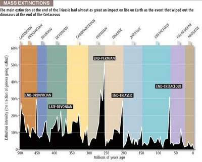
| Pro: | Computer simulations by Fred Rasio and Eric Ford (Massachusetts Institute of Technology) among others (presumably) show that Earthlike planets are probably unable to survive the gravitational tug-of-war in a system with two (or more) massive, Jupiter-like giants. They would be slung out of the system or sent careening into the central star. I strongly disagree with them. For one, we have already detected rocky planets in the habitable zone of a solar system with two or more massive Jupiter-like gas giants. (So there!) |
| Con: | Conversely, systems with no giant planets at all might also have dire consequences for life-bearing planets. Computer simulations by George Wetherill (Carnegie Institution of Washington) indicate that Jupiter acts as the solar system’s gravitational vacuum cleaner, efficiently thinning out the population of hazardous comets that venture into Earth-crossing orbits. Without a Jupiter the current impact rate of comets would be about 1,000 times higher, says Wetherill, with truly catastrophic collisions (like the one that killed the dinosaurs 65 million years ago) happening about once every 100,000 years. This would surely frustrate any slow evolutionary progress from simple life forms to higher intelligences. This is also true, but it isn’t as bad as what is predicted. |
Orbital Tilt
Dynamical studies by Jacques Laskar and Philip Robutel (Bureau des Longitudes, Paris) have shown that rocky, Earthlike planets show chaotic variations in orbital tilt that could lead to drastic climate changes.
Duh!
Fortunately, Earth’s chaotic tendencies are damped by tidal interaction with the Moon. Without a relatively large satellite, Earth might have experienced variations in axial tilt similar to those of Mars, possibly as large as 20° to 60°. This would cause extreme variations in the patterns of the seasons. According to one analysis of planet formation, a world like Earth has only about a 1 in 12 chance of ending up with a nice, mild axial tilt that is safely stabilized by a large moon. (On the other hand a moonless Earth might have retained its original rapid spin, which would tend to stabilize its axis.)
This is one of the many reasons why the moon was placed in orbit around the earth. As well as why the conditions are better for a species to evolve on a planet in a close orbit around a red or brown dwarf. The star’s mass stabilizes the planetary environment. The further out from a star a planet is, the more prone it become to cosmic disruption in the way of planetary disruptions. Large planets need to shepard other smaller bodies. And the planet itself becomes very prone to axial and orbital tilt changes. All of which could very well threaten planetary life.
It’s anyone’s guess how large axial swings would influence the evolution of life and the chance for the emergence of intelligence. Change and stress actually promote the emergence of new, versatile, adaptable species, biologists say.
For instance, Paul F. Hoffman (Harvard University) and three colleagues proposed in 1998 that the series of intense global ice ages between 760 and 550 million years ago were the crisis that drove the remarkable “Precambrian explosion” of new life forms around or shortly after that time.
The disastrous great extinctions later in Earth’s geologic record were always followed by vigorous recoveries, eventually spawning more species than existed before. (Complete recovery from any great extinction, regardless of size, always seems to take about 10 million years.)
Humanity’s own emergence as a species during an unusual run of ice ages is sometimes cited as an example of stress-driven evolution leading to adaptability and intelligence. So a planet with a tippy axis might actually speed evolution along.
But planetary crises that are too extreme or frequent would kill off everything, or keep life beaten down to a low level.
In any case, our existence here and now seems to be the accidental result of a number of astronomical coincidences that were unimagined in 1961.
Such coincidences are discussed in the book “Rare Earth” by Peter Ward and Donald Brownlee (Copernicus Books/ Springer, 2000). Ward and Brownlee argue that only very rarely will a good planet form and remain life-friendly for the billions of years that advanced creatures took to appear on Earth.
Seth Shostak of the SETI Institute argues in a rebuttal essay that some of their points are overstated, that once life is established it is probably adaptable enough to thrive in un-Earthly conditions, and that it therefore need not require a planet with a narrowly Earth-like history.
Frank and Sullivan Opinion
In a study published late April 2016 in the journal Astrobiology, researchers Adam Frank and Woodruff Sullivan took a new look at the Drake Equation.
But Frank and Sullivan decided to attack the problem by asking a different question: Has intelligent life ever existed on a distant planet?
In so doing, they came up with a new equation. It uses new data collected by NASA’s Kepler spacecraft and instruments that show that “roughly one-fifth of stars have planets in ‘habitable zones,’ where temperatures could support life as we know it,” said Frank in a statement. That was a big unknown at the time that Drake created his calculation.
The new equation estimates a one in 10 billion trillion chance that humans are the only intelligent species to have ever existed. Frank stated,
“One in 10 billion trillion is incredibly small. To me, this implies that other intelligent, technology-producing species very likely have evolved before us.”
Frank further explained that,
“before our result you’d be considered a pessimist if you imagined the probability of evolving a civilization on a habitable planet was, say, one in a trillion. But even that guess, one chance in a trillion, implies that what has happened here on Earth with humanity has in fact happened about 10 billion other times over cosmic history.”
Habitable Ring in the Galaxy
Ward and Brownlee’s associate Guillermo Gonzalez advocates the idea that there is only a narrow “habitable ring” in the Milky Way where conditions allow life-bearing planets. Closer to the galaxy’s center, conditions are supposedly too violent; farther out there aren’t enough heavy elements to make planets.
This idea has been roundly criticized as a gross exaggeration.
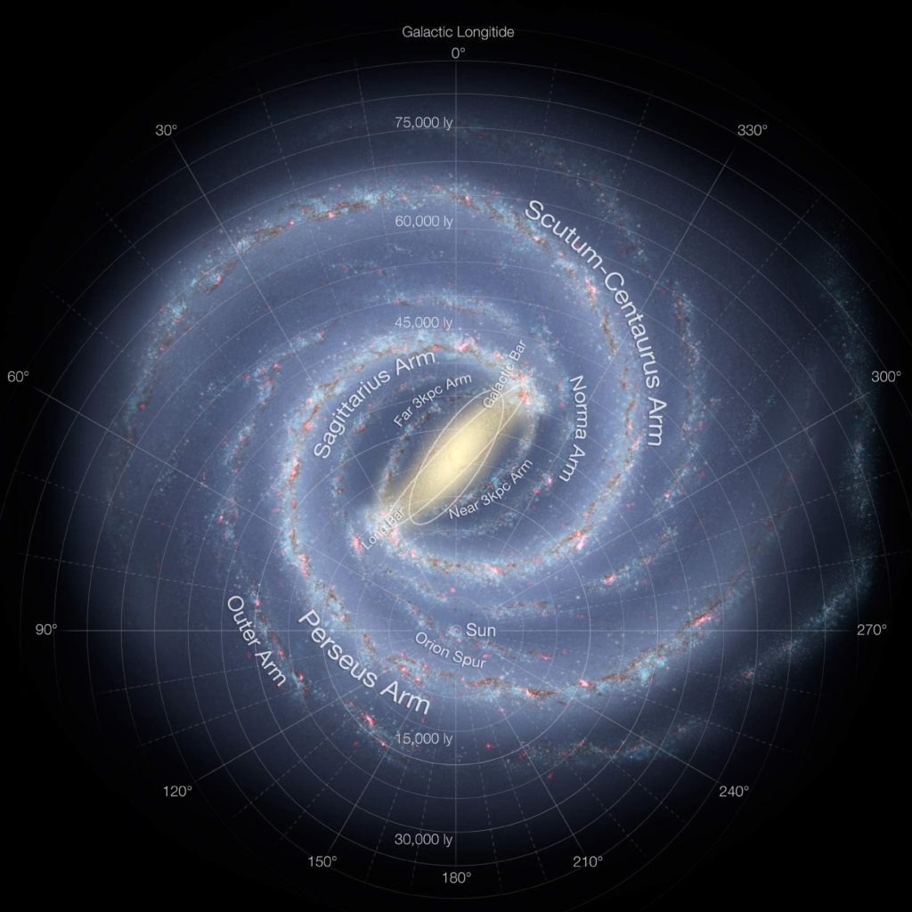
Heavy elements are in fact distributed widely throughout a galaxy’s disk (the evidence is in plain view: dark dust clouds of carbon and silicates riddle most parts of most disks), and stars with a fairly wide range of heavy-element concentrations have been discovered to have planets.
Dangerous radiation from an active galactic center would be blocked by a planet’s thick atmosphere; that’s why our own X- and gamma-ray telescopes have to be put in orbit.
David Darling notes in his book Life Everywhere: The New Science of Astrobiology (Basic Books, 2001) that Gonzalez argues from his religious conviction, expressed in other writings, that God designed one world for one intelligent race, and that Gonzalez’s astronomical views should be understood in this light.
I, personally, find this argument ridiculous.
However, let’s explore this in more detail. What if there were some value in the conjecture that only certain areas of the galaxy were suitable for life? It does deserve some consideration, even if it is rather difficult to believe. Let’s follow this argument based upon what we know of our own solar system.
One of Sol’s unusual features is its orbit around the center of the galaxy, which is (apparently) significantly less elliptical (“eccentric”) than those of other stars similar in age (and therefore metallicity) and type and is barely inclined relative to the Galactic plane.
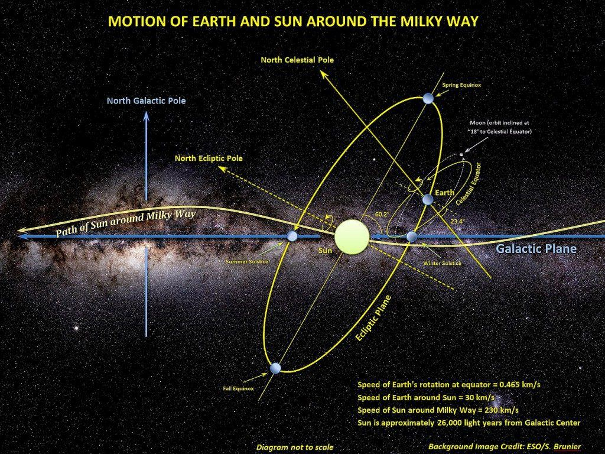
This circularity in Sol’s orbit prevents it from [1] plunging into the inner Galaxy where life-threatening supernovae are more common. Moreover, the small inclination to the galactic plane [2] avoids abrupt crossings of the plane that would stir up Sol’s Oort Cloud and bombard the Earth with life-threatening comets.
In fact, the Sun is orbiting very close to the “co-rotation radius” of the galaxy, where the angular speed of the galaxy’s spiral arms matches that of the stars within.
This is curious, but it’s significance is debatable.
The argument states that as a result, Sol avoids crossing the spiral arms very often, which would expose Earth to supernovae that are more common there.
The argument that is followed to this primary conclusion is that these are but exceptional circumstances. These attributes may have made it more likely for complex life and human intelligence to emerge on Earth.
According to Guillermo Gonzalez (an astronomer at Iowa State University), fewer than five percent of all stars in the galaxy enjoy such a life-enhancing galactic orbit. Bullshit. Nonsense. The reader should question such “experts” because other astronomers quickly point out, however, that many nearby stars move with Sol in a similar galactic orbit.
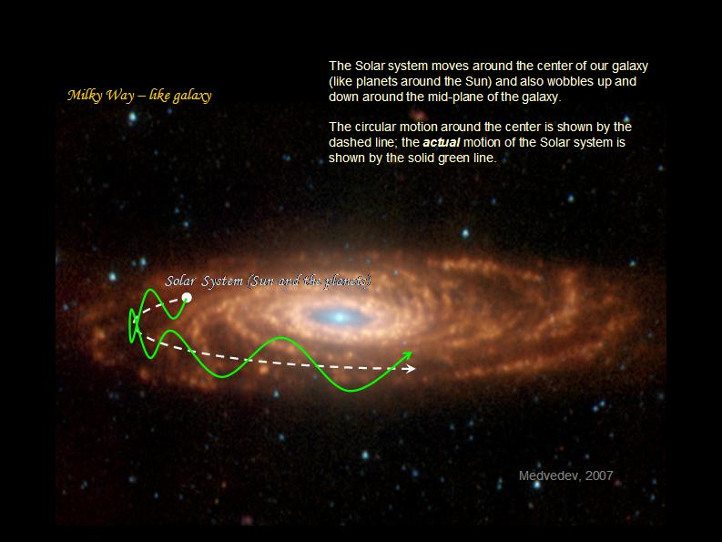
The Sun resides in a pancake region of the Galaxy called the “disk” with a strong concentration of stars (and gas and dust) within 3,000 light-years (ly) of the galactic plane, which includes the so-called “thin disk” that has more relatively younger stars within 1,500 ly of the plane in our Milky Way Galaxy.
This region is interesting. In it, we find that it contains relatively young to intermediate-aged stars that are within around five billion years old. The stars also possess relatively higher average metallicity in this region than other galactic regions located outside of the galactic core.
While partially true, the arguments follows that our region is a preferable one for the generation of naturally evolved stable life forms.
It is not true, but just simply representative of many isolated pockets within the galaxy. The argument is that there is a greater availability of elements higher than hydrogen and helium in this galactic region. And as such, it favors the formation of rocky inner planets as large as Earth, or bigger. Moreover, the galactic orbits of stars in this region tend to be relatively circular with low to moderate eccentricity. According to one recent definition of the galactic habitable zone, as much as 10 percent of all stars in the Milky Way may have experienced chemical and environmental conditions suitable for the development of complex Earth-type life over the past eight to four billion years for evolutionary development.
In recent millennia, the Sun has been passing through a Local Interstellar Cloud (LIC). This cloud is flowing away from the Scorpius-Centaurus Association of young stars. These stars are dominated by extremely hot and bright O and B spectral types, many of which will end their brief lives violently as supernovae.
The LIC is itself surrounded by a larger, lower density cavity in the interstellar medium (ISM) called the Local Bubble, that was probably formed by one or more relatively recent supernova explosions.
Conclusion
The reader should rest easy. The galaxy is controlled and patrolled by a number of galactic wide civilizations that will (probably) not allow mass extinction events to ever occur to an emerging intelligence.
fi= 1
All of the arguments above imply zero outside assistance from extraterrestrials. That’s a pretty big assumption. As studies have shown that there should be many such extraterrestrial organizations available to us. The value of fi= 1. It has been that way ever first the first advanced civilizations began to populate our galaxy.
Fc – Desirability in Communication to others.
“This thing has gotten so highly-classified… it is just impossible to get anything on it. I have no idea who controls the flow of need-to-know because, frankly, I was told in such an emphatic way that it was none of my business that I’ve never tried to make it to be my business since. I have been interested in this subject for a long time and I do know that whatever the Air Force has on the subject is going to remain highly classified.” – Senator Barry Goldwater, Chairman of the Senate Intelligence Committee
How confident can we be that at least some intelligent extraterrestrials will broadcast radio or other signals we can detect (fc)? According to contemporary science; “of course” all and every extraterrestrial race would communicate using radio waves. (This is a pretty big and arrogant assumption on our scientific community.)
Suppose that extraterrestrial intelligences are rare but do exist. Could we expect them to communicate with us through radio signals? What fraction of civilizations are able, and motivated, to broadcast in a way we can detect? Can and will they do so? In other words: what is the value of fc? Let’s think about this for a minute or so…
The reader should understand that SETI advocates tend to believe that it is large: that sooner or later, any civilization curious and inventive enough to become technological at all will discover that radio is an efficient way to communicate over astronomical distances, and will choose to do so.
How simplistic… and how so naïve.
They are wrong. Most (extraterrestrial species) keep their communications private and use quantum methods (If they are not part of a hive or matrix soul as are the bulk of the intelligent species are in our section of the galaxy.). They have no desire to communicate with “inferior” species.
Alas, all extraterrestrial species have this ability fc = 1, but most choose not to do so. fc = 0. With fc= 0, it is no wonder that we haven’t been able to find extraterrestrial life; for it has been shielded from us by design.
Matrix soul species don’t need any kind of electro-mechanical contrivances to communicate. They simply think something, and the rest of their species instantly knows about it.
Here, let’s assume that any species that does not have a hive or matrix soul configuration would be interested in communicating with other species. Further that about one tenth of them would be interested in communicating with others using the primitive techniques that we have at our disposal.
Assume that in our galaxy that about 50% of intelligent species are of a different soul configuration (aside from matrix or hive), then the value for fc = 0.5 which is further modified by 0.1 which is those that are interested in communicating with us using primitive means.
fc = 0.05
L- Average Lifetime of a Civilization.
“...an extraterrestrial influence that is investigating our planet. Something is monitoring the planet and they are monitoring it very cautiously.” -Former Sen. Mike Gravel (D-Alaska)
What is the average lifetime of radio-capable civilizations (L)?
The optimists claim that a stable, intelligent society could last for tens of millions of years, if not forever. This would certainly mitigate the effect of any bottleneck earlier in the Drake equation. In addition, a long-lived species might have time to spread to many stars, multiplying its presence.
The pessimists point out that humans invented radio technology only a century ago, and that the human race has been on the verge of destroying itself (through nuclear war or ecological overload) for much of that time. The human model thus indicates that the same technological power that enables interstellar communication also enables rapid self-destruction.
On at least two occasions, <content deleted> visited and interfered with Minuteman Intercontinental Ballistic Missiles (ICBMs) near Great Falls, Montana, home of Malmstrom Air Force Base (AFB). There were good reasons for this, and it was a necessary part of a series of preventative actions initiated by the <content deleted> at that time.
On the morning of March 16, 1967, glowing, disk-shaped UFOs evidently shut down two wings of Minuteman ICBMs.
Echo Flight lost all ten of its missiles during the encounters, while nearby Oscar Flight lost most of its missiles.
This was puzzling to investigating engineers because the missiles were designed to be entirely independent of each other. Military records show the events were “cause for grave concern” at Strategic Air Command (SAC) headquarters. Although widespread “UFO activity” was reported in Montana newspapers at the time, details about the Minuteman incidents were successfully covered up for several decades. Air Force personnel involved in the Minuteman-UFO encounters were sworn to secrecy by their commanding officers.
But others have pointed out that the human animal (as opposed to human civilization) would be almost impossible to kill off completely at this point. People have become too widespread and too capable; a few pockets of individuals would find ways to survive almost any conceivable war or global catastrophe. These survivors would be enough to fully repopulate the Earth, to numbers in the billions, in just a few thousand years. And a second technological civilization would arise more readily than our first one has done, because there would be a precedent.
Maybe this will happen many times.
Which brings up a little-noticed point. The value of L properly does not refer to the lifetime of one radio-transmitting civilization, but instead to the sum of all those that ever appear on a planet once it develops its first. (The long-term future of humanity and Earth’s biosphere is explored in Peter Ward’s book, “Future Evolution”.)
The pure and simple fact is this; once a given species evolves to a point of structured archetype, they will live within that archetype until they evolve past it. This could be for billions of years.
Us humans have been around for, at most a couple of hundred thousand years. With the current manifestation of humankind being less than 10,000 years old. The Tyrannosaurus lived for 2 million years. Trilobites, in various forms and shapes, lived for over 270 million years.
Assuming a long duration star like our own as the typical benchmark, the value would be 0.007/10 = L = 0.0007.
L = 0.0007
Conclusion
Life is abundant in our galaxy. The more information that we learn about our galaxy, and the more research that we conduct, the more we are convinced that this is indeed the case.
It is very important that we keep the knowledge of what we humans are, and how we fit into (our role) in the universe, secret from the bulk of humanity.
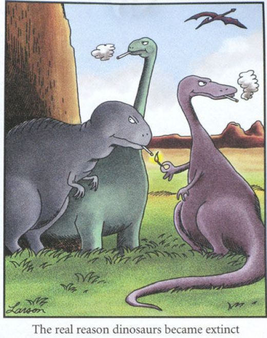
There was a time, early on, when we considered informing the general population of the presence of extraterrestrials. At that time, there were religious, social and technological considerations. At that time, it was considered proper, to introduce humanity to a staged introduction. In that way, over a number of decades, the general population would eventually begin to understand that we share the universe with others of equal or better intelligence.
Since that date, even with implementation procedures in process, it became better understood that full disclosure was more than just mentioning extraterrestrials, but rather our place in the general scheme of things. This created a quandary.
As the sentience sorting process MUST occur, free of external influences.
This was not only physical, but also mental thoughts as well. While it is impossible to control and reverse the trends already in process, what we can do is contain as much information as possible and maintain the structural integrity of the nursery to the best of our ability.
The reader is free is dispute all of this. The reader is free to believe whatever they want to. However, for the reader to fully understand what transpired in my narrative, the reader must understand the basic arguments (pro and con) regarding extraterrestrial life. My narrative and my autobiography does involve intelligent extraterrestrial life. There is no way to get around this fact.
The truth is that the reader is free to believe whatever they want to regarding anything. They can put this manuscript down and go away. They can watch the public media and believe their narratives, and they can believe their political, scientific, and religious leaders. They can follow, and be led along the blissful path so laid out for them to tread upon.
N = 750,000,000 x 0.8 x 9 x 2 x 1 x 0.005 x 0.0007
N = 378,000 civilizations willing to communicate with us in our galaxy.
Given the size of our galaxy and the age of it, and taking into account of a desire and a want to communicate with us humans, there should be many, many species that would want to chat with us. Even if you disagree with the numbers. There would be some. Certainly the number would be larger than zero.
Thus the question; “Where is everyone?”
The Answer from the Scientists
According to our learned “experts”, there are numerous scenarios that present themselves…
- We are alone in the universe.
- We were already visited and checked off as “not interesting”.
- We are “hicks” in the remote “backwoods”.
- There is never a need to venture forth explore or colonize.
- Everyone hides in our universe.
- Our technology is too primitive to detect other species.
- There is a predator that consumes all emerging species.
- We are the first intelligent species in the universe.
- All intelligence’s die off before they can travel to us.
All of these experts make one fatal assumption; that governments never lie and they are 100% open with everything that they know. Therefore, scientists are provided with all the facts to make learned decisions.
That’s a pretty big and massively stupid assumption.
In the entire history of the world, where nations come to power and eventually die off, there hasn’t been one single one which was 100% open and didn’t keep secrets. The assumption that a government will announce to the people that they have relationships with extraterrestrials is amazingly incompetent of them. It actually boggles the mind.
Instead of searching for answers from scientists who DO NOT HAVE all the information, let’s ask the people who do have all the information…
The Answer from MAJestic
Extraterrestrial species are everywhere. They are all around us. We just cannot see them. We are not permitted to see them. This is accomplished by a myriad of techniques and systems. It varies from invisibility techniques, to reality-slides into desolate MWI world-lines to reality layering technology.
We are in a sentience nursery, and we are but infantile in our understanding of reality.
Did I say "infantile"? I am sorry, I meant "totally and completely ignorant". There, I think that is more accurate.
We think, erroneously, that what we see with our senses is all that there is. We believe that the equipment that we manufacture as extensions of our senses is all that there is as well. Both are terribly wrong. We have yet to peer into our true reality.
For the true reality includes Heaven. The true reality includes the MWI and all our related “world-lines”. The true reality includes “layers of reality”; the things that exist beyond our perceptive abilities.
We cannot see things because we are not permitted to see them.
We exist on this planet under the watchful eyes of another species. This planet is a nursery; a preserve, and a crucible. It is a place that is designed to assist us in our evolution. It is done so purposely. For we humans are the the direct result of purposeful intelligent design.
With that in mind, we need to pay attention to our growth as a species. Instead of clamoring for land, money, power, sex and fortune, perhaps we should consider our role in life. Perhaps we should seriously take a look at where we are going as a species.
Our direction and advancement is a function of our sentience.
In fact, our status inside this nursery is wholly dependent on how we end up sorting out our human sentience. For currently, it is a mixture of three types of sentience’s. We can only have one sentience type. We cannot have a mixture of sentience types and function together in harmony.
Nor, can we ever be assigned a galactic archetype. The sentience defines the archetype. It’s never the other way around.
The following has NO BEARING and NO IMPACT on our sentience evolution;
- One world government.
- Elimination of private weapons ownership.
- Elimination of government armies and the military.
- Use of nuclear power-plants.
- Use of nuclear weapons.
- Care and husbandry of earth life.
- Ecology.
- A dominant religious order.
- Technology that will provide us with interstellar travel.
- Complete diversity, and fairness.
The following WILL have an impact in whether or not we can leave this nursery and graduate;
- The number of “disrupted sentience’s” falls below 15% of the total population.
- A dominant sentience, whether it is [1] “service for self”, or [2] “service to others” represents at least 60% of the population.
Once the primary or dominant sentience for humans has been established, our benefactors will then handle our species appropriately. How we will be handled, will absolutely depend on our dominant sentience. In any event, our “humanity” will be reconfigured to fit a galactic archetype. With that established, THEN we will be free to leave the sentience nursery.
We will NEVER be permitted to leave the nursery without being reconfigured into an approved archetype.
And, that boys and girls, is WHY the vast bulk of humanity are not seeing or meeting any extraterrestrials.
Keep this in mind. Physical contact will result in the generation of thought. Thoughts alter our reality. The only way that our sentience can evolve properly is in isolation. Else, we risk contamination of thought by a superior society.
Take Aways
- The number of stars in our galaxy can be considered to be between 750 million to 1500 million.
- At least 80% of the solar systems have planets. That increase to 100% if you include small asteroid bodies in the calculus.
- The chances for life in a solar system is very strong. If our solar system is typical, there are at minimum nine candidates for planetary life evolution.
- Every star has a region that creates the tentative environment for a habitable zone. If you include the primary stellar candidates, then the possibility exists for an average of two planetary candidates in this region.
- The galaxy is controlled and patrolled by a number of galactic wide civilizations that will (probably) not allow mass extinction events to ever occur to an emerging intelligence.
- A small percentage of intelligent life wants to communicate with humans using technology that humans can recognize and understand.
- Once a species evolves, it is protected by already established species and civilizations.
FAQ
Q: Where are the extraterrestrials?
A: They are all around us. Most are invisible to us humans. Some interact with us as they maintain a human-like form. Many are in reality off-shoots that we do not have the technology to detect.
Q: Does the American government know about the extraterrestrials?
A: No. It does not. There are a handful of government employees that are aware that extraterrestrials exist, and they are aware of the funding for MAJestic related projects. All the projects are kept out of the government by design. They operate as carve-outs and Special Access Programs that are waived and unacknowledged.
MAJestic Related Posts – Training
These are posts and articles that revolve around how I was recruited for MAJestic and my training. Also discussed is the nature of secret programs. I really do not know why the organization was kept so secret. It really wasn’t because of any kind of military concern, and the technologies were way too involved for any kind of information transfer. The only conclusion that I can come to is that we were obligated to maintain secrecy at the behalf of our extraterrestrial benefactors.


MAJestic Related Posts – Our Universe
These particular posts are concerned about the universe that we are all part of. Being entangled as I was, and involved in the crazy things that I was, I was given some insight. This insight wasn’t anything super special. Rather it offered me perception along with advantage. Here, I try to impart some of that knowledge through discussion.
Enjoy.


MAJestic Related Posts – World-Line Travel
These posts are related to “reality slides”. Other more common terms are “world-line travel”, or the MWI. What people fail to grasp is that when a person has the ability to slide into a different reality (pass into a different world-line), they are able to “touch” Heaven to some extent. Here are posts that cover this topic.


John Titor Related Posts
Another person, collectively known by the identity of “John Titor” claimed to utilize world-line (MWI egress) travel to collect artifacts from the past. He is an interesting subject to discuss. Here we have multiple posts in this regard.
They are;